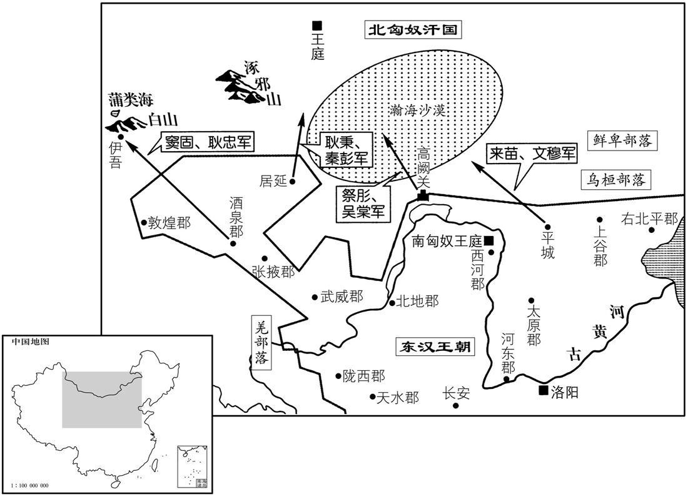

公元73年资治通鉴：本年记事、原文与白话对照
按原书编年位置阅读；追叙和史论不等于本年发生的事件。白话采用所据译本，缺译不以生成译文补齐。
卷45 · 本年记事
公元73年 · 汉显宗孝明皇帝永平十六年
十六年〔（癸酉、七三）〕
上传原文的注释括号有异常，字符原样保留；无法可靠划分的段落默认全文显示。
本年事件索引（现代整理）

本年形势与背景参考图
春，二月，遣肜与度辽将军吴棠将河东、西河羌、胡及南单于兵万一千骑出高阙塞，〔高阙，在朔方北。〕窦固耿忠率酒泉、敦煌、张掖甲卒及卢水羌、胡万二千骑出酒泉塞，〔贤曰：按湟水东经临羌县故城北，又东卢溪水注之，水出西南，卢川即其地也。余据西南夷传，冉駹夷北有黄石、北地、卢水胡。敦徒门翻。〕耿秉、秦彭率武威、陇西、天水募士及羌、胡万骑出张掖居延塞，骑都尉来苗、护乌桓校尉文穆将太原、鴈门、代郡、上谷、渔阳、右北平、定襄郡兵及乌桓、鲜卑万一千骑出平城塞，伐北匈奴。窦固、耿忠至天山，〔贤曰：天山，即祁连山，一名雪山，今名折罗汉山，在伊州北。「汉」，一作「漫」。〕击呼衍王，斩首千余级；追至蒲类海，〔贤曰：蒲类海，今名婆悉海，在今庭州蒲昌县东南。〕取伊吾卢地，置宜禾都尉，留吏士屯田伊吾卢城。取秉秦彭击匈林王，〔「匈林」，恐当作「句林」。建武时，匈奴尝遣句林王迎卢芳。句，音古侯翻。〕绝幕六百余里，至三木楼山而还│来苗、文穆至匈河水上，〔据前书，匈河水去令居数千里。臣瓒曰：去令居千里。〕虏皆奔走，无所获。祭肜与南匈奴左贤王信不相得，出高阙塞九百余里，得小山，信妄言以为涿邪山，〔北史曰：循弱水西行得涿邪山。〕不见虏而还。肜与吴棠坐逗留畏懦，下狱，免。〔下，遐稼翻。考异曰：袁纪「棠」，皆作「常」；今从范书。〕肜自恨无功，出狱数日，欧血死；临终，谓其子曰：「吾蒙国厚恩，奉使不称，〔称，尺证翻。〕身死诚惭恨，义不可以无功受赏。死后，若悉簿上所得物，〔若，奴也，皆为文簿而上之。上，时掌翻。〕身自诣兵屯，效死前行，以副吾心。」既卒，〔行，户刚翻。卒，子恤翻。〕其子逢上疏，具陈遗言。帝雅重肜，方更任用，闻之，大惊，嗟叹良久。乌桓、鲜箄每朝贺京师，常过肜耱拜谒，仰天号泣；辽东吏民为立祠，四时奉祭焉。〔肜，先为辽东太守，威信行于乌桓、鲜卑。号，户刀翻。为，于伪翻。〕窦固独有功，加位特进。
春季，二月，派祭肜与度辽将军吴棠率领河东、河西的羌人胡人部队和南匈奴单于的部队，共一万一千骑兵，出高阙塞；派窦固、耿忠率领酒泉、敦煌、张掖三郡郡兵和卢水的羌人胡人部队，共一万二千骑兵，出酒泉塞；派耿秉、秦彭率领由武威、陇西、天水等三郡募士和羌人胡人部队，共一万骑兵，出张掖居延塞；派骑都尉来苗、护乌桓校尉文穆率领太原、雁门、代郡、上谷、渔阳、右北平、定襄等七郡郡兵和乌桓、鲜卑部队，共一万一千骑兵，出平城塞，一同讨伐北匈奴。窦固和耿忠抵达天山，进攻北匈奴呼衍王，斩杀一千余人。又追击到蒲类海，夺取伊吾卢地区，设置了宜禾都尉，在伊吾卢城留下将士开荒屯垦。耿秉和秦彭进攻北匈奴匈林王，横越沙漠六百里，到达三木楼山后班师。来苗和文穆抵达匈河水畔，北匈奴部众全都溃散逃跑，没有斩获。祭肜与南匈奴左贤王信不合，他们出高阙塞九百余里，占领一座小山，信便谎称此山是涿邪山，结果他们没有找到敌人就回师了。祭肜和吴棠被指控犯有率军逗留、畏缩不前之罪，逮捕入狱，免去官职。祭肜自恨没有建立功勋，出狱几天后，吐血而死。临终时，他对儿子说：“我蒙受国家厚恩，没有完成使命，身死而心怀愧恨。根据道义，不可以无功而接受赏赐。我死后，你要将我所得的赏赐之物全部登记上缴，自己到兵营投军，在阵前效死，以称我心。”祭肜死后，他的儿子祭逢上书朝廷，一一陈述父亲的遗言。明帝一向器重祭肜，正要重新任用，听到他的遗言后，大为震惊，叹息了许久。后来，乌桓、鲜卑部落每次派使者到京城朝贺，总要经过祭肜的坟墓祭拜，仰天大哭。辽东郡的官吏和人民为祭肜建立了祠庙，四季祭祀。在这次战役中，唯独窦固一人有功，擢升特进。
固使假司马班超与从事郭恂俱使西域。〔百官志：大将军营五部，部有校尉一人，军司马一人；又有军假司马，为副贰。使，疏吏翻；下同。〕超行到鄯善，〔鄯，上扇翻。〕鄯善王广奉超礼敬甚备，后忽更疏懈。〔懈，古隘翻。〕超谓其官属曰：「宁觉广礼意薄乎﹖」官属曰：「胡人不能常久，无他故也。」超曰：「此必有北虏使来，狐疑未知所从故也。明者睹未萌，况已着邪！」乃召侍胡，诈之曰：「匈奴使来数日，今安在乎﹖」侍胡惶恐曰：「到已三日，去此三十里。」超乃闭侍胡，〔侍胡，鄯善所遣侍超者。使，疏吏翻。悉会其吏士三十六人，与共饮，酒酣，因激怒之曰：「卿曹与我俱在绝域，今虏使到裁数日，而王广礼敬即废。如令鄯善收吾属送匈奴，骸骨长为豺狼食矣，为之柰何﹖」官属皆曰：「今在危亡之地，死生从司马！」超曰：「不入虎穴，不得虎子。当今之计，独有因夜以火攻虏，使彼不知我多少，必大震怖，可殄尽也。〔怖，普布翻。〕灭此虏，则鄯善破胆，功成事立矣。」众曰：「当与从事议之。」超怒曰：「吉凶决于今日；从事文俗吏，闻此必恐而谋泄，死无所名，非壮士也。」众曰：「善！」初夜，超遂将吏士往奔虏营。〔初夜，甲夜也。〕会天大风，超令十人持鼓藏虏舍后，约曰：「见火然，皆当鸣鼓大呼。〔呼，火故翻。〕余人悉持兵弩，夹门而伏。」超乃顺风纵火；前后鼓噪，虏众惊乱，超手格杀三人，吏兵斩其使及从士三十余级，〔从，才用翻。〕余众百许人悉烧死。明日乃还，告郭恂，〔还，从宣翻，又如字。〕恂大惊；既而色动，〔意欲分超功而不能自揜于外，故色动。〕超知其意，举手曰：「掾虽不行，班超何心独擅之乎！」〔从事，掾也。掾，俞绢翻。〕恂乃悦。超于是召鄯善王广，以虏使首示之，一国震怖。超告以汉威德，「自今以后，勿复与北虏通。」〔复，扶又翻。〕广叩头，「愿属汉，无二心，」遂纳子为质。还白窦固，固大喜，具上超功效，〔质，音致。上，时掌翻。〕并求更选使使西域。帝曰：「吏如班超，何故不遣，而更选乎！今以超为军司马，令遂前功。」
两版字句有差异，建议核对原文。
窦固派副司马班超和从事郭恂一同出使西域。班超到达鄯善国时，鄯善王广用十分尊敬周到的礼节接待他，但后来忽然变得疏远懈怠了。班超对他的部下说：“你们可曾觉出广的态度冷淡了吗？”部下说：“胡人行事无常性，并没有别的原因。”班超说：“这一定是因为有北匈奴的使者前来，而鄯善王心里犹豫，不知所从的缘故。明眼人能够在事情未发生前看出端倪，何况事情已显著暴露！”于是他召来胡人侍者，假装已知实情，说：“匈奴使者来了几天，如今在什么地方？”胡人侍者慌忙答道：“已经来了三天，离此地三十里。”于是班超就把胡人侍者关起来，召集全体属员，共三十六人，和他们一同饮酒。饮到酣畅之时，班超借酒激怒众人说：“你们和我同在绝远荒域，如今北匈奴使者才来了几天，而鄯善王就已不讲礼节了，若是使者命令鄯善把我们抓起来送给匈奴，那么我们的骨头就要永远喂给豺狼了。我们应该怎么办？”部下一致回答：“如今处在危亡之地，我们跟随司马同生共死！”班超说：“不入虎穴，不得虎子。如今可行的办法，只有乘夜用火进攻匈奴人，使对方不知我们到底有多少人马，必定大为震恐，这样便可将他们一网打尽。除掉了北匈奴使者，那么鄯善人就会胆战心惊，我们便成功了。”众人说：“应当和从事商议此事。”班超生气地说：“命运的吉凶就在今天决定，而从事不过是平庸的文吏，听到我们的打算定要害怕，计谋便会泄露，到那时候，我们死得没有名堂，就不是英雄了。”众人说：“好！”一入夜，班超便带领部下奔向北匈奴使者的营地。当时正刮着大风，班超命令十人拿鼓，躲到匈奴人的帐房后面，相约道：“看见火起，就要一齐擂鼓呐喊。”其余的人全都手持刀剑弓弩，埋伏在帐门两侧。于是班超顺风放火，大火一起，帐房前后鼓声齐鸣，杀声震耳。匈奴人惊慌失措，一时大乱。班超亲手格杀三人，下属官兵斩杀北匈奴使者及其随从共三十余人，其余约一百人全部被火烧死。班超等人次日返回，将事情的经过告诉了郭恂。郭恂大为震惊，接着神色一变。班超明白了他的意思，举手声称：“从事虽然没有前去参与行动，可班超怎有心一人居功！”郭恂这才大喜。于是班超叫来鄯善王广，给他看匈奴使者的首级，鄯善全国震恐。班超将汉朝的国威和恩德告诉鄯善王，并说：“从今以后，不要再同北匈奴来往。”广叩头声称：“我愿臣属汉朝，没有二心。”于是将王子送到汉朝充当人质。班超归来后，向窦固讲述了出使经过，窦固十分高兴，将班超的功劳一一上报，并请求重新选派使者出使西域。明帝说：“有班超这样的官员，为什么不派遣，而要另选他人呢？现任命班超为军司马，让他完成先前的功业。”
固复使超使于窦，〔复，扶又翻；下同。窴，徒贤翻。〕欲益其兵；超愿但将本所从三十六人，曰：「于窴国大而远，今将数百人，无益于强；如有不虏，多益为累耳。」〔累，力瑞翻。〕是时于窴王广德雄张南道，〔贤曰：雄张，犹炽盛也。张，竹亮翻。予谓张者，自大之意。〕而匈奴遣使监护其国。〔监，古衔翻。〕超既至于窴，广德礼意甚疏。且其俗信巫，巫言：「神怒，何故欲向汉﹖汉使有騧马，急求取以祠我！」〔贤曰：续汉及华峤书并作「騩」。说文：马浅黑色也，音京媚翻。余谓騧，音瓜；黄马黑喙曰騧，读如本字。〕广德〔【章：十二行本「德」下有「乃」字；乙十一行本同。】〕遣国相私来比就超请马。〔相，息亮翻。〕超密知其状，报许之，而令巫自来取马。有顷，巫至，超即斩其首；收私来比，鞭笞数百。以巫首送广德，因责让之。广德素闻超在鄯善诛灭虏使，大惶恐，即杀匈奴使者而降。〔降，户江翻。〕超重赐其王以下，因镇抚焉。于是诸国皆遣子入侍，西域与汉绝六十五载，至是乃复通焉。〔王莽天凤三年，焉耆击杀王骏，西域遂绝，至此五十八载耳；此言与汉绝六十五载；盖自始建国元年数之，谓莽篡位而西域遂与汉绝也。复，扶又翻。载，子亥翻。〕超，彪之子也。
窦固又让班超出使于阗国，想为他增加随行兵马，但班超只愿带领原来跟从的三十六人。他说：“于阗是个大国，道路遥远，如今率领几百人前往，无益于显示强大。而如有不测之事发生，人多反而成为累赘。”当时，于阗王广德称雄于西域南道，但该国仍受匈奴使者的监护。班超到达于阗后，广德待他礼仪态度十分疏淡。于阗又有信巫之俗，而巫师声称：“神已发怒，问我们为何要倾向汉朝？汉朝的使者有一匹黑唇黄马，快去找来给我做祭品！”于是广德派宰相私来比向班超索求赠马。班超暗中获知底细，便答应此事，但要巫师亲自前来取马。不久，巫师来了，班超便立刻将他斩首，并逮捕了私来比，痛打数百皮鞭。班超将巫师的首级送给广德，借机对他进行谴责。广德早已听说过班超在鄯善斩杀北匈始使者的事迹，大为惊恐，便随即杀死匈奴使者投降。班超重赏于阗王及其大臣，就此镇服安抚于阗。于是西域各国全都派出王子到汉朝做人质。西域与汉朝的关系曾中断了六十五年，至此才恢复交往。班超是班彪之子。
淮阳王延，性骄奢，而遇下严烈。有上书告「延与姬兄谢弇及姊伲韩光招奸猾，作图谶，祠祭祝祖。」事下按验。〔谶，楚谮翻。祝，职救翻。诅，庄助翻。下，遐稼翻。〕五月，癸丑，弇、光及司徒邢穆皆坐死，所连及死徙者甚众。
淮阳王刘延生性骄横而奢侈，对待下属严酷无情。有人向朝廷上书控告：“刘延同姬妾之兄谢及姐夫韩光招揽奸猾之人，编造图谶，进行祭祷诅咒。”此案下交有关官员追查核实。五月癸丑（二十五日），谢、韩光和司徒邢穆都因罪被判处死刑，受此案牵连而被处死或流放者众多。
戊午晦，日有食之。
五月戊午晦（三十日），出现日食。
六月，丙寅，以大司农西河王敏为司徒。
六月丙寅（初八），将大司农西河人王敏任命为司徒。
有司奏请诛淮阳王延；上以延罪薄于楚王英，秋，七月，徙延为阜陵王，食二县。〔贤曰：阜陵，县名，属九江郡，故城在今滁州全椒县南。〕
有关官员奏请将淮阳王刘延处死。而明帝认为刘延之罪轻于楚王刘英，秋季，七月，将刘延改封为阜陵王，以两个县作为他的食邑。
是岁，北匈奴大入云中，云中太守廉范拒之；吏以众少，欲移书傍郡求救，范不许。会日暮，范令军士各交缚两炬，三头爇火，营中星列。〔贤曰：用两炬交缚加十字，爇其三头，手持一端，使敌人望之，疑兵士之多。爇，懦劣翻。〕虏谓汉兵救至，大惊，待旦将退。范令军中蓐食，晨，往赴之，〔贤曰：蓐食，早起食于寝蓐中也。〕斩首数百级，虏自相辚藉，死者千余人，〔贤曰：辚，轹也。藉，相蹈藉也。辚，良刃翻。〕由此不敢复向云中。〔复，扶又翻。〕范，丹之孙也。〔廉丹为王莽将。〕
本年，北匈奴大举进攻云中郡。云中郡太守廉范进行抵抗。下属官员因本郡兵少，想要送信给邻郡请求救援，廉范不许。这时天已黄昏，廉范命令军士各将两支火把交叉捆绑成十字形，点燃三端，在军营中排开，状如繁星。匈奴人以为汉朝援军已到，大为震惊，打算等到天亮时便撤走。廉范命令部队在夜宿之地进餐。清晨，汉军出击，斩杀数百人。而匈奴军队自相践踏而死的有一千余人。北匈奴从此不敢再侵扰云中郡。廉范是廉丹之孙。